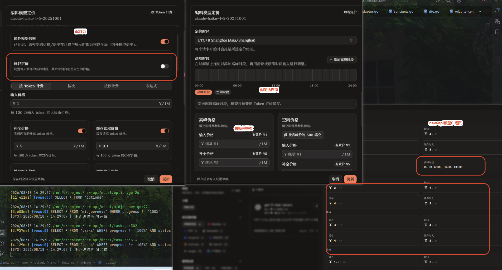

把时间变成计费维度：new-api 峰谷定价的设计与落地
基于 new-api 现有表达式计费能力，新增标准化峰谷定价配置，将时区、高峰时段和多维 Token 单价编译成统一表达式，并贯通预扣、最终结算、模型广场、创作页和用量日志审计。
目录
一、业务背景
模型上游在不同时段可能存在不同成本，平台也希望通过空闲时段优惠引导用户错峰调用。传统“一个模型一套固定单价”无法表达这种变化，而直接让运营人员手写计费表达式又容易出错。
峰谷定价需要同时回答四个问题：管理员如何直观配置时区、时段和价格；跨午夜、重叠时段、显式零价如何处理；长请求跨越价格边界时按哪个时刻计费；用户如何确认一次请求命中了哪个档位。
二、总体架构
峰谷定价没有另建一条独立计费通道，而是复用 tiered_expr 表达式系统，让可视化配置和实际执行收敛到同一份计费事实。
Ctrl / ⌘ + 滚轮缩放，放大后可拖动查看
这延续了表达式系统“一条表达式、一个事实来源”的原则：编辑器负责生成，后端负责验证和执行，前端从同一结构反向解析，避免各端维护互相漂移的计价规则。
三、标准峰谷定价模型
1. 配置结构
标准配置包含 IANA 计价时区、一组高峰分钟区间、默认 Token 单价，以及高峰和空闲两套可选覆盖价格。支持输入、输出、缓存读取、普通缓存写入、1 小时缓存写入、图像输入/输出和音频输入/输出等价格维度。
价格覆盖使用指针字段，刻意区分“未填写，继承默认价格”和“显式填写 0，该档位免费”两种语义，避免 omitempty 把合法零价丢掉。
2. 时间区间规范化
高峰区间统一采用 [start, end) 左闭右开语义，并在保存前完成：
- 跨午夜区间拆分，例如
22:00–02:00拆成两段。 - 重叠与相邻区间合并。
- 自动计算 24 小时内未覆盖的空闲时段。
- 校验分钟范围并忽略零长度区间。
- 严格校验 IANA 时区，拒绝依赖服务器环境的
Local。
同一份业务配置最终只生成一种稳定表达式，前后端往返编辑时不会因为区间顺序或数字格式不同产生脏差异。
3. 编译为统一表达式
配置上海时区 09:00–12:00、14:00–18:00 为高峰后，会生成类似下面的标准表达式：
(minuteOfDay in peakIntervals)
? tier("peak", p * peakInput + c * peakOutput + ...)
: tier("off_peak", p * offPeakInput + c * offPeakOutput + ...)后端只把符合标准 canonical 结构的表达式识别为峰谷定价；任意自定义时间表达式继续按普通表达式处理，避免误解析和错误展示。
四、解决最关键的一致性问题：冻结计价时刻
如果请求在 17:59:59 发起、18:00:10 完成，预扣按高峰、结算按空闲，就会出现同一次调用前后档位不一致。
为此，表达式执行入口增加显式评估时刻。请求开始时生成毫秒级 pricing_time_ms 写入 BillingSnapshot，最终结算从快照恢复同一时刻；hour、minute、weekday、month、day 等函数在单次执行中也复用同一时间。
一次请求始终按服务端接收请求时的档位计价，不受流式响应、长请求或跨分钟边界影响。
五、从后台配置到用户可见
1. 管理端编辑器
模型定价抽屉增加峰谷开关、计价时区、高峰时间轴和高峰/空闲价格覆盖。管理员可以拖动时间轴或精确输入时间；重新拖画会替换重叠区间，只有真正发生合并时才提示。
关闭某一计价维度时同步清理对应高峰与空闲草稿；音频输入关闭时也清理音频输出，避免保存不可达配置。

2. 定价接口与前端时钟
定价接口返回结构化 time_pricing 和 server_time_ms。new-api 默认主题、classic 主题与 amax-router 都使用服务端时间计算当前档位：前端先计算服务器与本机的偏移，再在下一个分钟边界自动刷新，避免用户电脑时间不准导致展示错误。
模型卡片、详情抽屉和创作页模型选择器会标注“峰谷定价 · 当前高峰/空闲”，同时展示当前有效输入、输出和缓存价格。
3. 计费审计
每次调用的用量日志写入冻结计价时间 pricing_time_ms、计价时区 pricing_timezone、实际命中档位 matched_tier、有效基础单价 effective_unit_prices，并保留原始表达式快照 expr_b64 兼容旧日志和自定义表达式。
用户展开日志即可核对这次调用为什么命中高峰或空闲，以及各 Token 维度按什么价格计算。
六、兼容性、验证与复盘
- 旧模型不受影响：未启用时继续使用原按 Token、按次、按秒或普通表达式计费。
- 自定义表达式不误判：仅识别系统生成的标准结构，非法数据安全降级。
- 显式零价不丢失：可选字段保留“未填写”和“0”的差异。
- 倍率边界不变化：海外、分组、渠道、利润和代理倍率仍在原有层级应用，基础单价不会重复放大。
- 多前端一致：new-api default、classic 与 amax-router 共用同一服务端元数据和时间口径。
后端测试覆盖区间规范化、空闲补集、跨午夜、重叠合并、时区校验、价格继承、显式零价、表达式往返、固定时间边界和结算快照复用；定价接口、日志序列化和旧日志降级也补充了回归验证。
峰谷定价真正困难的部分不是写一个 if hour >= 9，而是保证配置、预扣、结算、展示和审计五个环节对“现在几点、使用哪套价格”得出完全相同的答案。标准表达式、服务端时钟和请求级时间快照，把一个容易产生边界争议的功能变成可验证、可回放的计费能力。
七、简历可用表述
设计并落地 new-api 峰谷定价系统，支持 IANA 时区、多高峰区间、跨午夜与多维 Token 价格覆盖，贯通后台配置、预扣结算、模型展示和日志审计，并通过请求级计价时间快照解决长请求跨档位计费不一致问题。
技术关键词：动态计费、表达式引擎、请求快照、时间边界、IANA 时区、跨午夜区间、服务端时钟校准、计费审计。